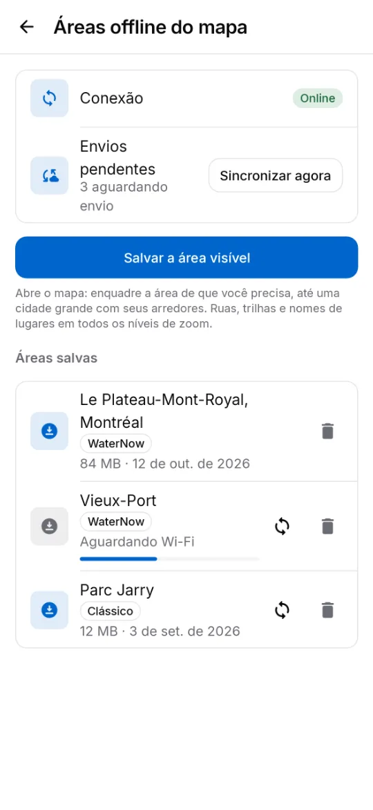
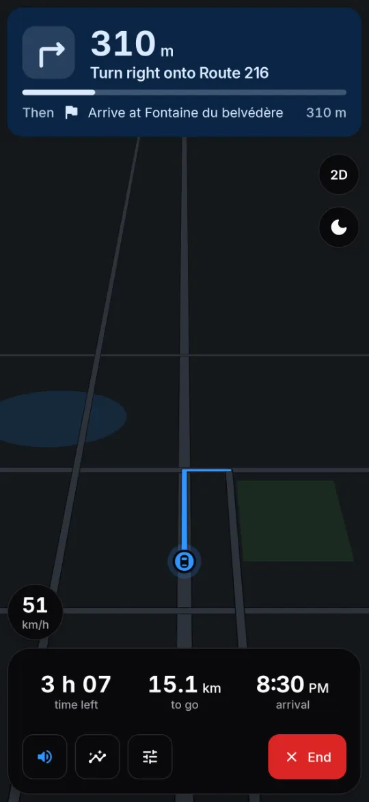

Cidade de Quebec · Quebec, Canadá
Encontre água e banheiros grátis na cidade de Quebec
Vieux-Québec, Planícies de Abraão, Saint-Roch, Limoilou: aonde quer que você vá, o WaterNow mostra os pontos de água e os banheiros grátis perto de você e leva você até lá.
Baixar para Android- Grátis
- Sem anúncios
- Sem conta

Por que o WaterNow
Grátis
O mapa, a busca, as rotas e os mapas offline são grátis, para sempre.
Sem anúncios
Nenhuma propaganda, em lugar nenhum do app.
Sem conta
No modo convidado, você pode explorar o mapa, ver rotas e registrar suas recargas.
Funciona offline
Salve sua cidade: o mapa e seus pontos funcionam sem conexão.
Navegação passo a passo
A pé, de bicicleta ou de carro, com uma voz que anuncia cada curva.
Acessível e para cães
Filtros para mostrar só os pontos acessíveis, ou os que têm água para o seu cachorro.
7 idiomas
Português, inglês, francês, espanhol, alemão, japonês e romeno.
Privacidade em primeiro lugar
Sem rastreadores. Sua localização serve para encontrar água perto de você, e você pode exportar ou excluir seus dados a qualquer momento.
Conheça o app


Como funciona
Baixe o app
Grátis, para Android, direto deste site.
Abra, com ou sem conta
Continue como convidado ou crie uma conta: você escolhe.
Siga a rota
Escolha um ponto de água ou um banheiro perto de você e siga a navegação.
Perguntas frequentes
O WaterNow é grátis?
Sim. O mapa, a busca, as rotas e os mapas offline são grátis, sem anúncios. Existem extras opcionais, mas tudo o que é útil continua grátis.
Preciso de uma conta?
Não. Como convidado, você pode explorar o mapa, ver rotas e registrar suas recargas. Com uma conta, você também pode adicionar pontos, avaliações e fotos.
Funciona offline?
Sim. Salve a área de que você precisa, até uma cidade grande e seus arredores: o mapa e seus pontos funcionam depois sem conexão.
Em quais celulares funciona?
No Android. O botão baixa o app direto deste site, e o Android pede que você autorize a instalação.
Com sede na cidade de Quebec?
Baixe o WaterNow e veja água e banheiros grátis perto de você.
Baixar para Android